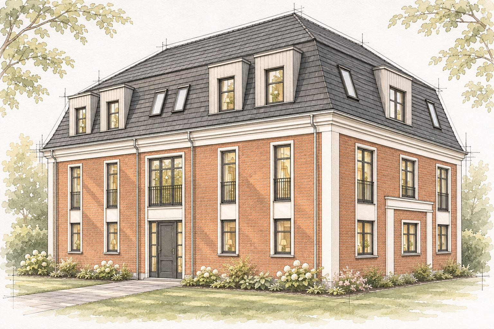
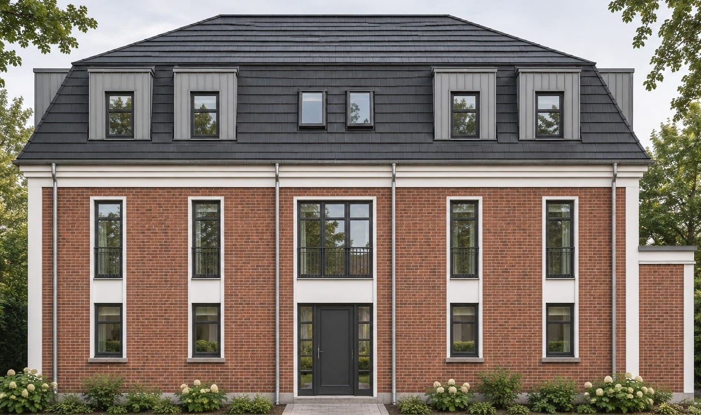

Showroom · Neues Projekt
Wählingsweg 24
Von der Skizze zum Zuhause.
Sechs Eigentumswohnungen in einer klassischen Stadtvilla in Hamburg-Schnelsen. Ziehen Sie den Regler und erleben Sie, wie aus der ersten Handskizze das fertige Haus wird.



Ansichten
Vier Seiten.
Eine Handschrift.
Klinker in warmen Rottönen, helle Faschen und ein dunkles Mansarddach mit Gauben – von jeder Seite ein ruhiges, klassisches Bild.
Alle Ansichten sind KI-generierte Visualisierungen.
Grundrisse
Drei Geschosse.
Sechs Wohnungen.
Je Geschoss zwei Wohnungen, verbunden über ein gemeinsames Treppenhaus. Wählen Sie ein Geschoss für einen ersten Eindruck.

01 / 03Erdgeschoss
02 / 03Obergeschoss
03 / 03Dachgeschoss